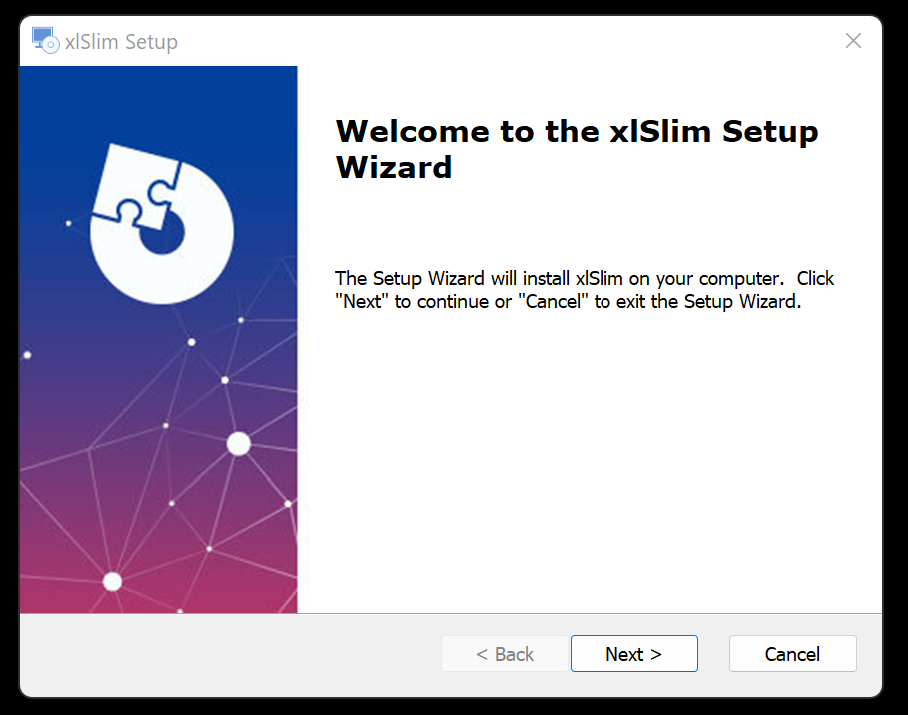

Installation¶
Please make sure your computer meets the Software Requirements.
Download the installation package from xlslim.com:
{kind=link}
Clicking on the “latest version” link will open the actual download page:
{kind=link}
Download the installation exe:
{kind=link}
It is always a good idea to verify that any downloaded files have not been tampered with. Windows has the “certutil” utility that can compute the cryptograpic hash of a file.
certutil -hashfile .\xlSlim.exe SHA1
If you run this you’ll see the hash matches the details on the website:
{kind=link}
After verification, double-click on the downloaded xlSlim.exe and run through the installation:
{kind=link}
The default installation location is “%APPDATA%MicrosoftAddIns” this is one of the places Excel looks for add-ins.
{kind=link}
{kind=link}
{kind=link}
{kind=link}
Tick the “Launch xlSlim” box to launch Excel with the xlSlim add-in. A Start menu shortcut of “xlSlim” is also added.
{kind=link}
You may see a warning similar to this, please choose to “Enable all code published by this publisher.” Please check that the “Show Signature Details” reports the code as signed by “Webber Software Solutions Ltd”.
{kind=link}
In Excel you can use the functions IsPremiumLicensed() and LicenseExpiry() to verify a trial license has been obtained successfully. See Licensing for details.
{kind=link}